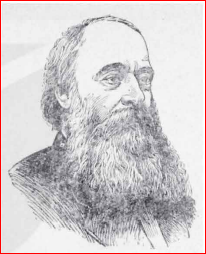
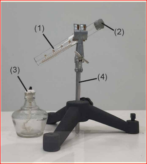
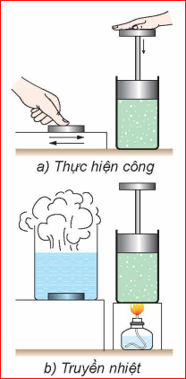
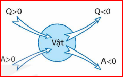
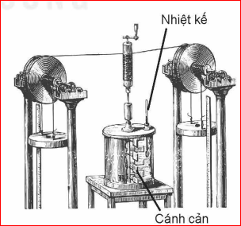
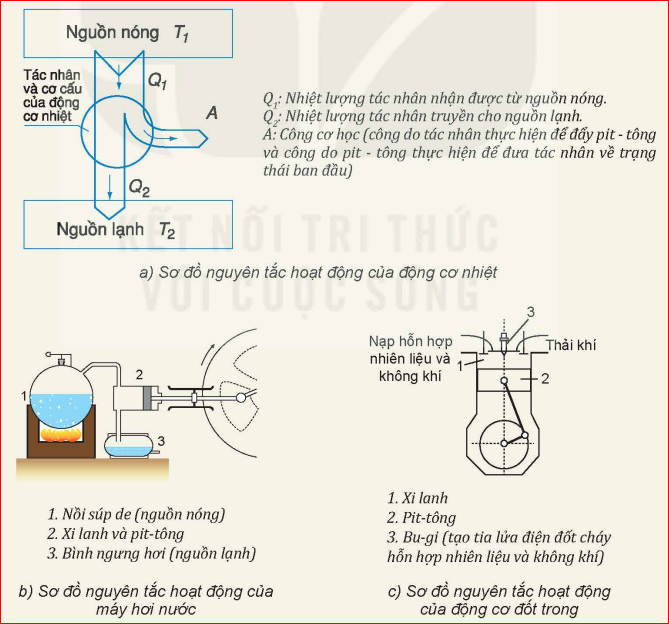

- Động năng phân tử: Các phân tử chuyển động không ngừng nên chúng có động năng. Động năng phân tử phụ thuộc vào tốc độ chuyển động của phân tử (và nhiệt độ của vật).
- Thế năng phân tử: Các phân tử tương tác với nhau nên chúng có thế năng tương tác phân tử (gọi tắt là thế năng phân tử). Thế năng phân tử phụ thuộc vào khoảng cách giữa các phân tử (và thể tích của vật).
Định nghĩa: Tổng động năng và thế năng của các phân tử cấu tạo nên vật được gọi là nội năng của vật. Nội năng được kí hiệu bằng chữ \(U\) và có đơn vị là jun (\(\text{J}\)).
* Nội năng của một vật phụ thuộc vào nhiệt độ (\(T\)) và thể tích (\(V\)) của vật: \(U = f(T, V)\).
❓ Tại sao nội năng của vật lại phụ thuộc vào nhiệt độ và thể tích của vật?
Vì các phân tử cấu tạo nên vật chuyển động không ngừng nên tốc độ và khoảng cách giữa các phân tử luôn thay đổi làm cho động năng và cả thế năng của các phân tử cũng không ngừng thay đổi. Do đó, khi nói động năng và thế năng của phân tử thì phải hiểu đó là động năng và thế năng trung bình của các phân tử cấu tạo nên vật.
Vì số phân tử trong một vật vô cùng lớn và các phân tử chuyển động hỗn loạn nên không thể xác định được chính xác độ lớn nội năng của một vật. Trong vật lí người ta chủ yếu quan tâm đến độ biến thiên nội năng (\(\Delta U\)) của vật.

Hình 2.1. James Joule (1818-1889)
James Joule (1818-1889): Nhà vật lí người Anh có nhiều đóng góp cho sự hình thành và phát triển nhiệt động lực học.
Nhiệt động lực học: Là lĩnh vực vật lí nghiên cứu về năng lượng nhiệt và sự truyền nhiệt. Lĩnh vực này ra đời vào giữa thế kỉ XIX trong quá trình con người tìm hiểu về sự chuyển hóa năng lượng dự trữ trong các nhiên liệu thành cơ năng để chế tạo các động cơ nhiệt.

Hình 2.2. Thí nghiệm về mối liên hệ giữa nội năng của vật với năng lượng của các phân tử khí
(1) Ống nghiệm | (2) Nút bấc vừa khít | (3) Đèn cồn | (4) Giá đỡ thí nghiệm
Khi đun ống nghiệm tới một lúc nào đó thì thấy nút bấc bật ra. Giải thích vì sao nút bấc bật ra.
Khi nút chưa bị bật ra:
a) Nội năng của không khí trong ống nghiệm tăng hay giảm? Vì sao?
b) Nội năng của không khí trong ống nghiệm tăng có phải do thế năng phân tử khí tăng không? Tại sao?
c) Tại sao hiện tượng nút ống nghiệm bị bật ra lại chứng tỏ động năng của các phân tử khí trong ống nghiệm tăng?
a) Nội năng của không khí tăng vì không khí nhận nhiệt từ đèn cồn làm nhiệt độ không khí tăng.
b) Không phải. Vì khi nút chưa bật ra, thể tích khí giữ không đổi nên khoảng cách trung bình giữa các phân tử khí không thay đổi, dẫn đến thế năng phân tử không tăng.
c) Khi nút bị bật ra chứng tỏ khí trong ống đã đẩy nút (thực hiện công). Công này do động năng của các phân tử khí va chạm vào nút tạo ra. Động năng phân tử tăng làm áp suất khí tăng đủ lớn để đẩy bật nút.
Có hai cách làm thay đổi nội năng của vật:

Hình 2.3. Hai cách làm thay đổi nội năng của vật: a) Thực hiện công - b) Truyền nhiệt
Mô tả sự thay đổi nội năng của lượng khí trong xi lanh ở Hình 2.3.
Tìm thêm ví dụ về thực hiện công và truyền nhiệt làm thay đổi nội năng của vật.
- Thực hiện công: Bơm xe đạp làm thân bơm nóng lên; dùng tay chà xát hai bàn tay vào nhau mùa đông.
- Truyền nhiệt: Thả thìa kim loại vào cốc nước nóng; phơi tấm sắt ngoài trời nắng.
Định luật I của nhiệt động lực học là sự vận dụng định luật bảo toàn năng lượng vào các quá trình thay đổi nội năng.
Phát biểu: Nếu vật vừa nhận được công vừa được truyền nhiệt thì độ biến thiên nội năng của vật bằng tổng công và nhiệt lượng mà vật nhận được:
$$\Delta U = A + Q$$

Hình 2.4. Quy ước về dấu của \(Q\) và \(A\) trong hệ thức \(\Delta U = A + Q\)
❓ Các hệ thức sau đây mô tả các quá trình thay đổi nội năng nào?
1. Đơn thuần truyền nhiệt: \(Q>0\) (vật nhận nhiệt lượng), \(Q<0\) (vật tỏa/truyền nhiệt lượng).
2. Đơn thuần thực hiện công: \(A>0\) (vật nhận công), \(A<0\) (vật thực hiện công).
3. Vật nhận nhiệt lượng (\(Q>0\)) và thực hiện công lên vật khác (\(A<0\)).
4. Vật nhận công từ vật khác (\(A>0\)) và truyền nhiệt lượng cho vật khác (\(Q<0\)).

Hình 2.5. Sơ đồ mô tả thí nghiệm của Joule
Định luật I được hình thành từ thí nghiệm Joule tiến hành từ 1844 đến 1854. Công \(A\) mà nước nhận được từ vật nặng chuyển động làm quay các cánh cản khiến nước nóng lên (nội năng tăng). Nếu tính cả phần nhiệt truyền cho môi trường: \(\Delta U = A + Q\) (với \(Q < 0\)).
Động cơ nhiệt là động cơ hoạt động dựa trên nguyên tắc biến nội năng của nhiên liệu thành cơ năng. Mỗi động cơ nhiệt đều có ba bộ phận chính:

Hình 2.6. (a) Sơ đồ nguyên tắc hoạt động động cơ nhiệt | (b) Máy hơi nước | (c) Động cơ đốt trong
Hãy dựa vào các sơ đồ trong Hình 2.6b, c để trình bày sơ lược về cấu tạo và hoạt động của máy hơi nước và động cơ đốt trong.
- Máy hơi nước: Nguồn nóng là nồi súp de tạo hơi nước áp suất cao; hơi nước vào xi lanh đẩy pit-tông sinh công; hơi thải được ngưng tụ tại bình ngưng hơi (nguồn lạnh).
- Động cơ đốt trong: Nhiên liệu và không khí nạp vào xi lanh, bu-gi đánh lửa đốt cháy nhiên liệu tạo khí nhiệt độ/áp suất cao đẩy pit-tông sinh công; khí thải xả ra môi trường (nguồn lạnh).
❓ 1. Nội năng của vật biến đổi như thế nào trong các trường hợp sau:
a) Vật rắn đang nóng chảy.
b) Nước đá đang tan.
c) Hơi nước ngưng tụ ở nhiệt độ không đổi.
a) Nội năng tăng (do nhận nhiệt năng để phá vỡ mạng tinh thể, làm thế năng phân tử tăng).
b) Nội năng tăng (tương tự sự nóng chảy, thế năng phân tử tăng).
c) Nội năng giảm (do tỏa nhiệt ra môi trường làm giảm thế năng tương tác phân tử).
❓ 2. Một vật khối lượng \(1\text{ kg}\) trượt không vận tốc ban đầu từ đỉnh xuống chân mặt phẳng nghiêng dài \(21\text{ m}\), góc nghiêng \(30^\circ\). Tốc độ ở chân là \(4,1\text{ m/s}\). Tính công của lực ma sát và độ biến thiên nội năng. Lấy \(g = 9,8\text{ m/s}^2\). Bỏ qua trao đổi nhiệt với MPN.
Chiều cao đỉnh MPN: \(h = s \cdot \sin 30^\circ = 21 \cdot 0,5 = 10,5\text{ m}\).
Cơ năng tại đỉnh: \(W_1 = mgh = 1 \cdot 9,8 \cdot 10,5 = 102,9\text{ J}\).
Cơ năng tại chân: \(W_2 = \frac{1}{2} m v^2 = 0,5 \cdot 1 \cdot 4,1^2 = 8,405\text{ J}\).
Công của lực ma sát: \(A_{\text{ms}} = W_2 - W_1 = 8,405 - 102,9 = -94,495\text{ J}\).
Độ biến thiên nội năng của vật: \(\Delta U = -A_{\text{ms}} = 94,495\text{ J}\) (do cơ năng hao phí chuyển hóa thành nội năng).
Thử thách 10 câu hỏi trắc nghiệm Bài 2!
Bài 1:
Người ta truyền cho khí trong một xi lanh một nhiệt lượng \(100\text{ J}\). Khí nở ra thực hiện một công \(70\text{ J}\) đẩy pit-tông. Tính độ biến thiên nội năng của khí.
Lời giải:
- Khí nhận nhiệt lượng nên \(Q = +100\text{ J}\).
- Khí thực hiện công nên \(A = -70\text{ J}\).
Theo Định luật I của nhiệt động lực học:
$$\Delta U = A + Q = (-70) + 100 = +30\text{ J}$$
Vậy nội năng của khí tăng \(30\text{ J}\).
Bài 2:
Nén một khối khí trong xi lanh, ta thực hiện một công là \(150\text{ J}\). Trong quá trình nén, khối khí tỏa ra môi trường xung quanh một nhiệt lượng là \(40\text{ J}\). Tính độ biến thiên nội năng của khối khí.
Lời giải:
- Khối khí nhận công từ bên ngoài nên \(A = +150\text{ J}\).
- Khối khí tỏa nhiệt lượng nên \(Q = -40\text{ J}\).
Độ biến thiên nội năng của khối khí là:
$$\Delta U = A + Q = 150 + (-40) = +110\text{ J}$$
Vậy nội năng của khối khí tăng \(110\text{ J}\).
Bài 3:
Một động cơ nhiệt nhận nhiệt lượng \(Q_1 = 1200\text{ J}\) từ nguồn nóng và truyền nhiệt lượng \(Q_2 = 800\text{ J}\) cho nguồn lạnh. Tính công cơ học \(A\) mà động cơ thực hiện được và hiệu suất \(H\) của động cơ nhiệt này.
Lời giải:
Công cơ học do động cơ thực hiện là:
$$A = Q_1 - Q_2 = 1200 - 800 = 400\text{ J}$$
Hiệu suất của động cơ nhiệt là:
$$H = \frac{A}{Q_1} \cdot 100\% = \frac{400}{1200} \cdot 100\% \approx 33,33\%$$